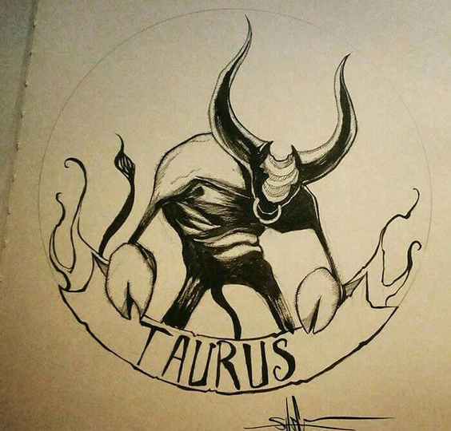
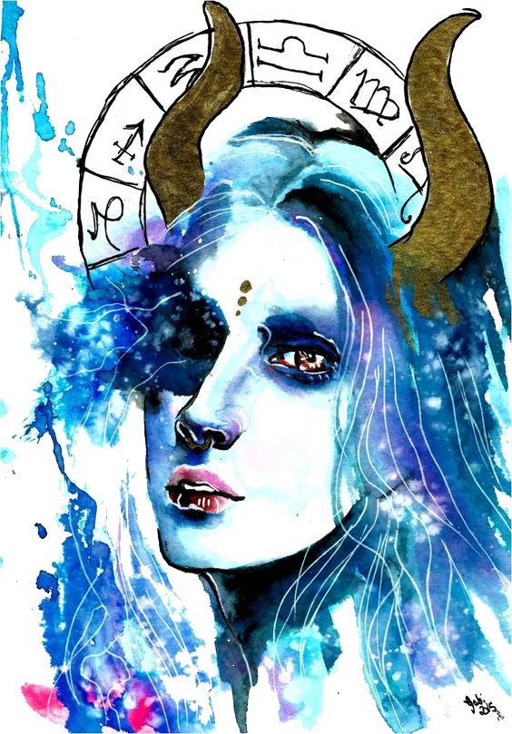

Taurus is an old-fashioned type when it comes to love, a complex combo of toughness and sensitivity. To the outside world, you may appear completely composed, but inside, you’re a hopeless romantic looking for that “love of a lifetime.” Your needs are basic: you want a stable, loyal partner who’s affectionate and classy.
 Tarus’s symbol is the bull because this sign’s characteristic is to be peaceful and methodical. This sign is often very deliberate in their actions, relaxed, and enjoys all of the sensual pleasures that abound in this dimension. Food, drink, sex, luxury, are all sought after by the typical taruean. Because this sign loves luxury they are willing to work hard to obtain it. They are slow to anger, but once disturbed it can be volatile. Taurus signs look for stability in their lives and in their partners and co-workers. Taurus people are not in a hurry, typically, and it can take them many years to decide what it is that they would like to do for a living, or where they’d like to go on vacation
Taurus people almost always finish what they start. They are deliberate thinkers and when making decisions usually make the right one. Taurus are generally adaptable, adjusting easily to new circumstances especially if there is the reward of luxury, comfort, or sensual reward. This sign loves to laugh and spend time with family.